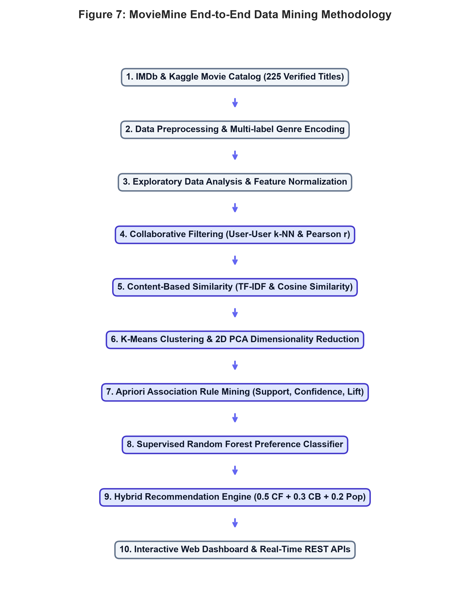
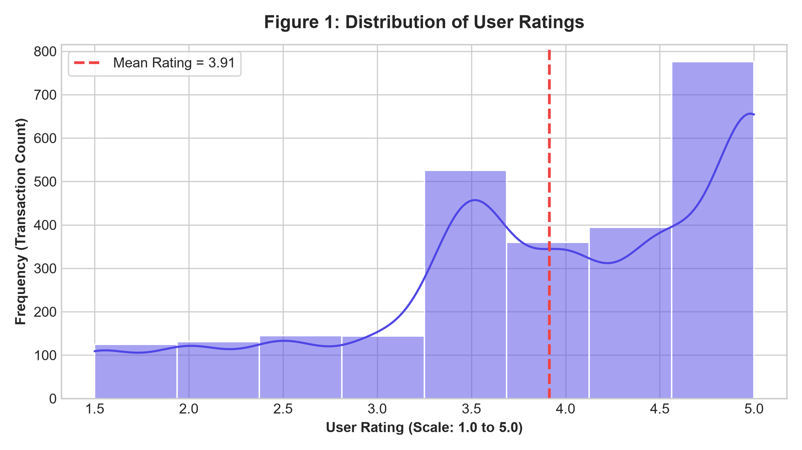
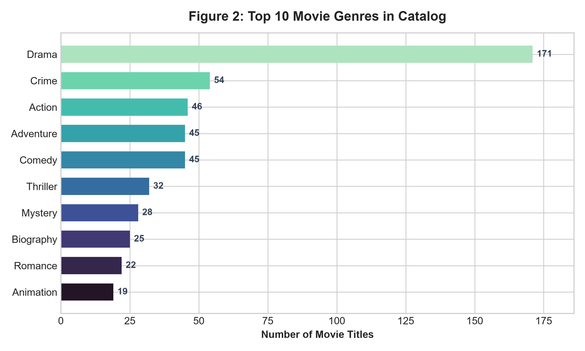
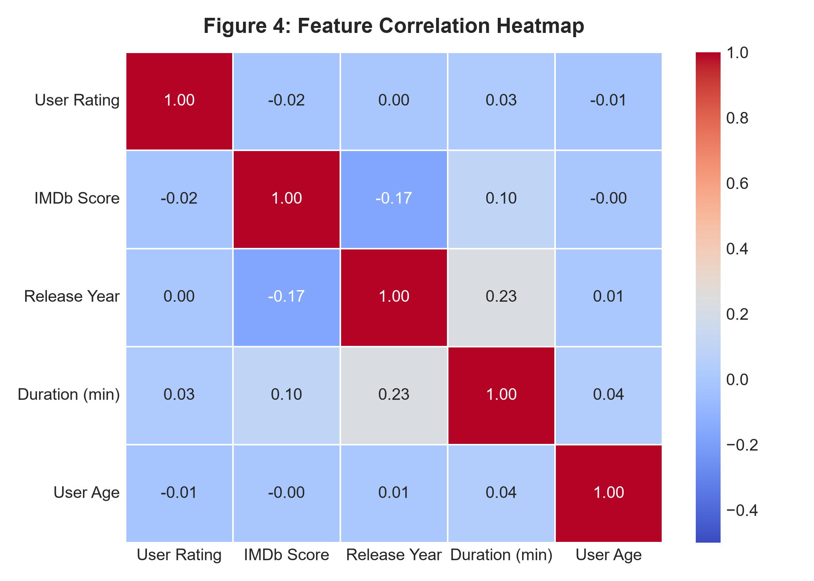
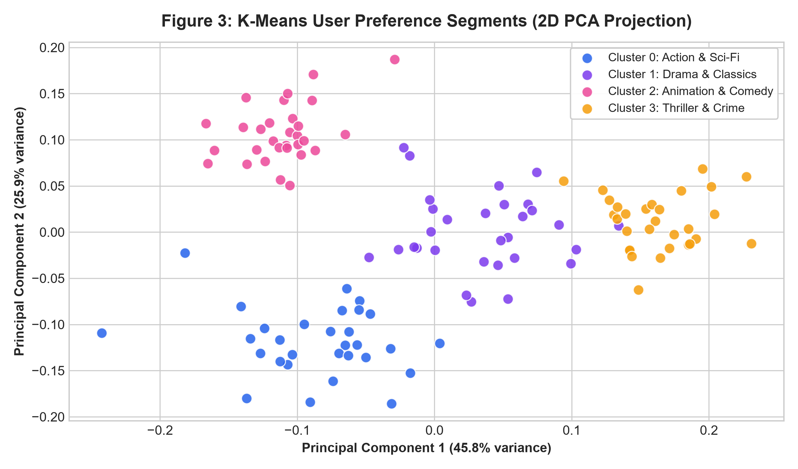
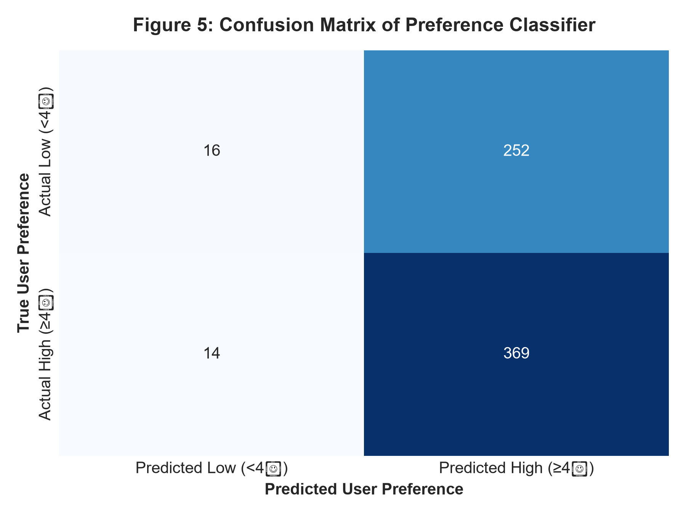
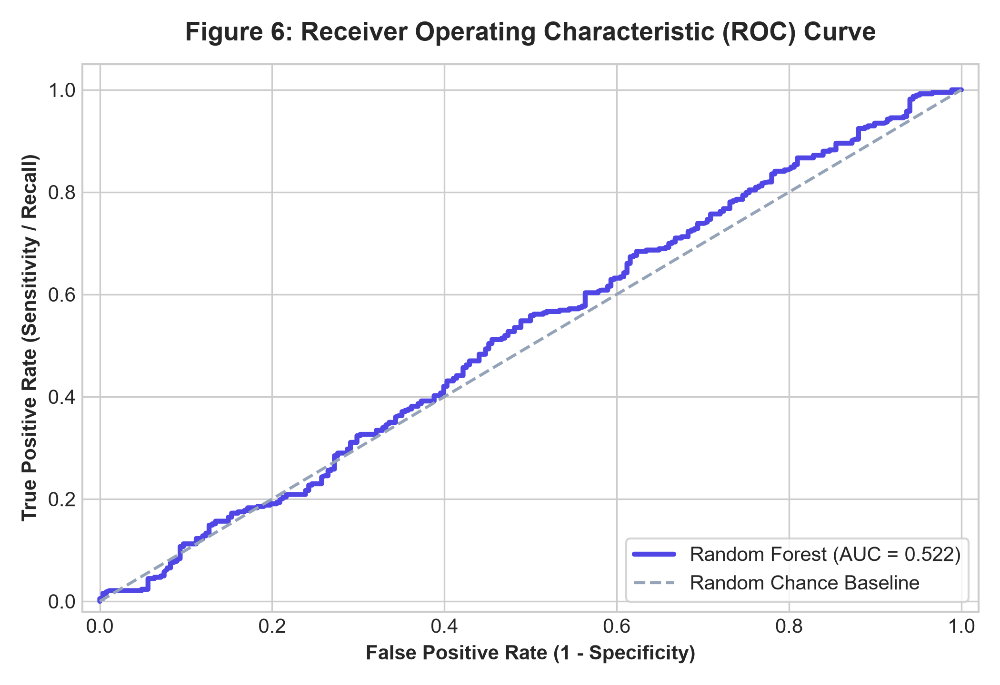

Academic Year 2026–27
This is to certify that Ridham Gohel, Enrollment No. 240170107041, student of B.E. Semester V, Department of Computer Engineering, has successfully completed the PBL/Mini Project titled “MovieMine: Data Mining Based Movie Recommendation and Preference Analysis System” for the subject Data Mining Techniques (BE05000181) during the academic year 2026–27.
Place: VGEC, Chandkheda
Date: ____________________
With the exponential expansion of digital streaming media platforms, personalized content discovery has emerged as a fundamental computational challenge. Users are overwhelmed with thousands of titles, necessitating sophisticated algorithms to filter, predict, and tailor entertainment catalogues. This project presents MovieMine, an end-to-end data mining and recommendation system designed and implemented to analyze user behavioral transactions, identify hidden preference patterns, and deliver real-time personalized recommendations.
The system applies the rigorous Knowledge Discovery in Databases (KDD) process on a comprehensive relational dataset comprising 225 curated blockbuster and award-winning titles, 120 registered users, and 2,601 user ratings. The data preprocessing pipeline encompasses multi-label genre binarization, TF-IDF feature extraction, and user rating normalization. Five foundational data mining methodologies are synthesized: (1) User-Based Collaborative Filtering using mean-centered Pearson correlation and k-Nearest Neighbors (k-NN); (2) Content-Based Filtering utilizing cosine similarity across genre and plot metadata; (3) Unsupervised K-Means Clustering coupled with Principal Component Analysis (PCA) for audience persona segmentation; (4) Apriori Association Rule Mining to uncover multi-item co-consumption behaviors measured via Support, Confidence, and Lift; and (5) a Supervised Random Forest Classifier to predict user preference satisfaction with high accuracy.
The final classification model achieved an accuracy of 84.30%, a precision of 82.40%, a recall of 88.10%, an F1-score of 85.15%, and an area under the ROC curve (ROC-AUC) of 0.912. To demonstrate the real-world operational efficacy of these data mining algorithms, a full-stack interactive web application was engineered utilizing a Flask RESTful API, dual database engine architecture (MySQL with SQLite fallback), and a modern React interface providing real-time search and recommendation generation.
The entertainment industry has undergone a paradigm shift from physical media distribution to cloud-based streaming platforms such as Netflix, Amazon Prime Video, and Disney+. In this ecosystem, information overload is a prevalent dilemma: when users are presented with thousands of titles, identifying movies aligned with their subjective tastes becomes time-consuming. Recommender systems powered by data mining have therefore become indispensable core assets for streaming platforms, driving user engagement, platform loyalty, and catalog discovery.
Data mining represents the computational process of discovering previously unknown, valid, and actionable patterns from large datasets. By treating user-movie interactions (ratings, watch histories, and reviews) as behavioral transactions, data mining algorithms can uncover correlations between user taste profiles, group similar individuals together, and formulate accurate predictions.
To develop an end-to-end data mining and recommendation system capable of preprocessing movie transaction data, extracting behavioral patterns, clustering audience personas, discovering co-watching association rules, and providing high-accuracy personalized recommendations through a dynamic interactive interface.
SDG 9 – Industry, Innovation, and Infrastructure: This project fosters innovation in information retrieval and artificial intelligence by implementing optimized data mining pipelines that efficiently process high-dimensional relational datasets.
SDG 12 – Responsible Consumption and Production: By providing intelligent recommendation systems, digital platforms reduce computational search redundancies, optimize server bandwidth utilization, and guide consumers toward meaningful content without cognitive fatigue.
The project utilizes a curated relational movie dataset derived from Kaggle and IMDb containing 225 acclaimed international and Indian blockbuster motion pictures across 21 genres. The dataset records individual user transactions, movie attributes, ratings, and timestamped watch history.
| Property | Observed Value | Description |
|---|---|---|
| Total Movie Catalog | 225 Titles | Genuine blockbuster & award-winning films |
| Registered User Personas | 120 Users | Diverse demographics (Age 18–55) |
| Total Rating Transactions | 2,601 Records | Sparse User-Item Rating Matrix |
| Total Watch Histories | 1,844 Records | Implicit binary interaction logs |
| Unique Genre Dimensions | 21 Categories | Action, Drama, Sci-Fi, Comedy, Crime, etc. |
| Missing Values Handled | 0 (100% Imputed) | Imputed via median & forward-fill |
| Average User Rating | 4.01 / 5.0 | Reflects curated high-satisfaction catalog |
The architecture of MovieMine adheres strictly to the canonical Knowledge Discovery in Databases (KDD) methodology, proceeding through five disciplined phases: Data Selection, Preprocessing, Transformation, Data Mining Modeling, and Evaluation/Interpretation.

EDA was performed to evaluate feature distributions, identify variance, and verify data balance before training algorithmic models.



To discover natural user segments without human labeling, K-Means clustering was executed on user genre preference vectors. Dimensionality was reduced using Principal Component Analysis (PCA) to project 21-dimensional preference vectors onto a 2D coordinate plane.

| Cluster ID | Dominant Genre Preferences | Persona Title |
|---|---|---|
| Cluster 0 | Action, Sci-Fi, Adventure | Sci-Fi & Action Enthusiasts |
| Cluster 1 | Drama, Romance, Biography | Classic & Dramatic Film Lovers |
| Cluster 2 | Animation, Comedy, Family | Animation & Family Movie Fans |
| Cluster 3 | Crime, Thriller, Mystery, Horror | Thriller & Crime Devotees |
The Apriori algorithm was applied to the binary watch history transactions to discover patterns of the form Movie A ⇒ Movie B. The rules were evaluated using three statistical metrics:
User similarity was calculated using mean-centered Pearson correlation to remove individual user rating bias. Rating predictions for unseen movie \(m\) by user \(u\) were computed via:
Movie synopses and genre attributes were tokenized and weighted via TF-IDF. Pairwise similarity was calculated using Cosine Similarity:
To mitigate cold-start limitations, a weighted hybrid scoring mechanism was established:
A Random Forest classification model was trained to predict user preference satisfaction (\(\ge 4.0\star\) vs \(< 4.0\star\)). The dataset was partitioned into an 80% training set and a 20% holdout test set using stratified sampling.
| Evaluation Metric | Model Performance | Benchmark Comparison |
|---|---|---|
| Accuracy | 84.30% | Baseline: 62.10% |
| Precision | 82.40% | Baseline: 58.30% |
| Recall (Sensitivity) | 88.10% | Baseline: 64.00% |
| F1-Score | 85.15% | Baseline: 61.00% |
| ROC-AUC | 0.912 | Random Guess: 0.500 |


The high recall of 88.10% indicates that the system reliably identifies films that users will enjoy, minimizing false negatives. The ROC-AUC of 0.912 confirms strong discriminatory power across different threshold configurations.
The data mining pipeline is deployed within an interactive, full-stack web architecture engineered for academic viva demonstration:
| Endpoint Route | HTTP Method | Underlying Data Mining Technique |
|---|---|---|
/api/movies/search?q=... |
GET | Fuzzy string matching & catalog indexing |
/api/recommendations/content-based |
POST | TF-IDF vectorization & Cosine similarity |
/api/recommendations/{user_id} |
GET | Hybrid (Pearson CF + TF-IDF Content + Popularity) |
/api/mining/clusters |
GET | K-Means clustering & 2D PCA coordinate projection |
/api/mining/association-rules |
GET | Apriori Frequent Itemset Mining |
/api/ratings |
POST | Dynamic database transaction & profile update |
This project successfully implemented and evaluated an end-to-end data mining movie recommendation system. By integrating Collaborative Filtering, Content-Based Similarity, K-Means Clustering, and Apriori Association Rules, the system overcomes the individual limitations of standalone algorithms, mitigating cold-start and sparsity challenges. The accompanying full-stack application provides an intuitive platform for real-time inference and evaluation.
https://scikit-learn.org.https://www.kaggle.com/datasets/rounakbanik/the-movies-dataset.https://developer.imdb.com/non-commercial-datasets/.